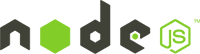

Getting Started
To develop your own tasks or to run your own instance of Tatool in your lab, you'll have setup your local environment first. The following steps guide you through this process. Note that you have to complete this setup on one machine only even if you want to run Tatool on multiple machines in your lab. As long as your network settings allow for it, other machines can access Tatool via a standard web browser.
Install nodeJS

Get the latest node.js LTS download for your operating system from http://nodejs.org/ and follow the instructions on their page to install it.
In the following, you'll need to enter a few commands. To do so in Windows, open a Command Prompt window by clicking the Start button and then typing cmd in the search box. On Mac, navigate to Applications and then to Utilities. Open the Terminal by double-clicking it.
Type the following command in your terminal window and make sure you get a response indicating your version of nodeJS. If you don't see the version of your nodeJS, something went wrong with your installation and you'll need to fix it first.
> node --version
v8.9.1
Install MongoDB Community Edition
Get the latest download of MongoDB Community Server for your operating system from http://www.mongodb.org and follow the instructions on their page to install it. Follow the steps under 'Install MongoDB Community Edition', and also complete Step 1 under 'Run MongoDB Community Edition' which will create the necessary data directory for MongoDB.
Type the following commands in your terminal window and make sure you get a response indicating your version of MongoDB. If you don't see the version of your MongoDB, something went wrong with your installation and you'll need to fix it first. The cd command changes your directory to the directory where you installed MongoDB. On Windows by default it will be in "C:\Program Files\MongoDB\Server\3.4\bin" if you install version 3.4.
> cd <path to mongodb binary>
> mongo -version
MongoDB shell version: 3.2.8
...
Get the latest download of Tatool from our GitHub repository. If you're familiar with Git, we recommend you clone the tatool-web repository, otherwise you can simply download a ZIP file by clicking here.
After having downloaded/extracted the tatool-web code to where you want to run Tatool from, you are ready to install tatool-web.
1. Open the folder where you downloaded and extracted tatool-web to in your terminal window. The cd command changes your directory to the directory where you extracted/cloned tatool-web to.
> cd <path to tatool-web-master>
2. Run npm run setup to install Tatool and all its dependencies. On Mac OSX you might need to run this with the sudo command. The installation might take a while the first time.
> npm run setup
...
In case you see a bunch of ECONNRESET error messages during your installation you can run the following command first to make sure node is using the correct URL to download all dependencies:
npm config set registry http://registry.npmjs.org/
The following steps are needed to execute your local Tatool environment. You'll need to follow these steps every time you want to start your local instance of Tatool.
1. Start mongoDB (if you haven't already done so in an earlier step) by first changing into the mongoDB directory using the cd command followed by the full path where you installed the mongoDB into. Don't close the terminal afterwards, as this will kill the process running your database. If you chose a different data directory during the installation, you'll need to provide the dbpath argument (without the brackets [ ]).
> cd <path to mongodb binary>
> mongod --dbpath [your data directory path]
...waiting for connections on port 27017
2. Start nodejs in a new terminal by executing the commands below. First you'll have to change into the directory where you extracted/cloned tatool-web to. The second command will start a local web server hosting Tatool. Don't close the terminal, as this will kill the process running your server.
> cd <path to tatool-web-master>
> npm start
...
You can access tatool on hostname:3000
Running tatool in LAB mode.
3. Access your Tatool instance by opening the url http://127.0.0.1:3000 in your browser. You should now see the Tatool start page.
Remember that your local instance of tatool-web has nothing to do with the instance running on tatool-web.com and no data is shared between the instances.
4. If this is your first time starting Tatool, you can login with the default admin user:
Email: admin@tatool-web.com
Password: 1234
Change the admin password immediately by going to the Admin tab and clicking on the change password button next to the user 'admin@tatool-web.com'. You can also start adding your lab users in the admin tab by clicking on the 'Add user' button.
What's Next?
Learn more about the Administration of your Tatool instance to manage Users and Projects.